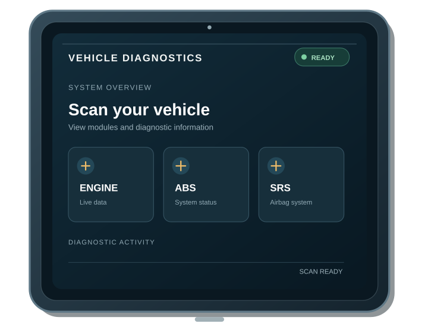

Primero el presupuesto
Escáneres por menos de $300
Cuatro opciones comparadas para pruebas activas, datos mejorados, diagnóstico DIY y lectura básica de códigos.
Ver opciones por menos de $300 →Guías prácticas y basadas en investigación para elegir escáneres de diagnóstico automotriz. Aprende qué funciones importan y qué debes verificar antes de gastar dinero.
Investigación independiente. Distinguimos las especificaciones publicadas por los fabricantes de las pruebas físicas.

Evita la jerga técnica. Elige la categoría que se acerque a tu necesidad y confirma la compatibilidad antes de comprar.
Cuatro opciones comparadas para pruebas activas, datos mejorados, diagnóstico DIY y lectura básica de códigos.
Ver opciones por menos de $300 →Entiende qué hacen las pruebas activas y por qué solo funcionan con componentes y vehículos compatibles.
Comparar funciones y modelos →Compara hardware, funciones, conectividad, actualizaciones y limitaciones de tres marcas conocidas.
Ver comparación de escáneres →Algunos enlaces de productos pueden generar una comisión. Priorizamos especificaciones publicadas, limitaciones y compatibilidad del vehículo.
Un lector básico de códigos y una tableta bidireccional avanzada están diseñados para trabajos diferentes. Piensa primero en la tarea que necesitas realizar.
Para leer y borrar códigos relacionados con el motor y las emisiones, consultar datos en vivo y revisar monitores de preparación.
Ver opciones básicas →Para ejecutar pruebas activas compatibles, diagnosticar más módulos y usar funciones de servicio que un lector básico no ofrece.
Comparar modelos avanzados →Verifica año, marca, modelo, versión, módulo y función exacta. Que una función aparezca anunciada no garantiza que funcione en tu auto.
Revisar qué debes confirmar →Un escáner puede anunciar cientos de funciones de servicio, pero eso no significa que todas funcionen en todos los vehículos. Compara pruebas activas, protocolos, cobertura, actualizaciones y limitaciones.
Son modelos para investigar, no una clasificación basada en pruebas físicas. Verifica la cobertura para tu vehículo antes de comprar.
Explicamos términos técnicos y diferencias importantes que pueden hacer que dos escáneres parecidos sean compras muy distintas.
Define qué necesitas que haga el escáner y confirma esa función exacta para tu vehículo. Revisa también si requiere una aplicación, suscripción, adaptador o autorización adicional.